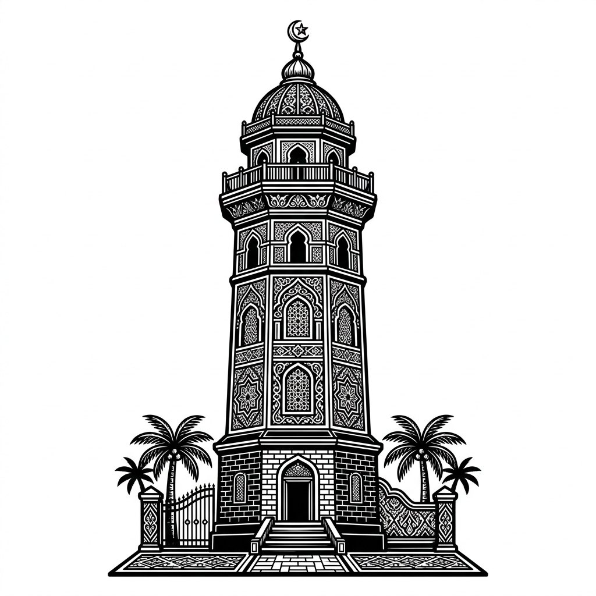

Arahkan kamera ke gambar marker Menara atau Masjid.
Marker yang Tersedia:

Menara
Masjid
Catatan: Karena ini versi purwarupa, Anda perlu mengkompilasi 2 gambar di atas menjadi file targets.mind melalui MindAR Compiler Tool, lalu simpan di folder assets/.